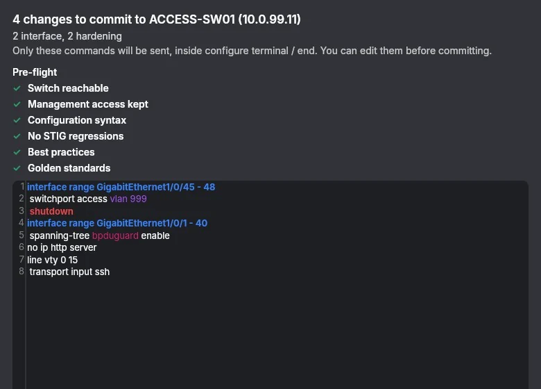
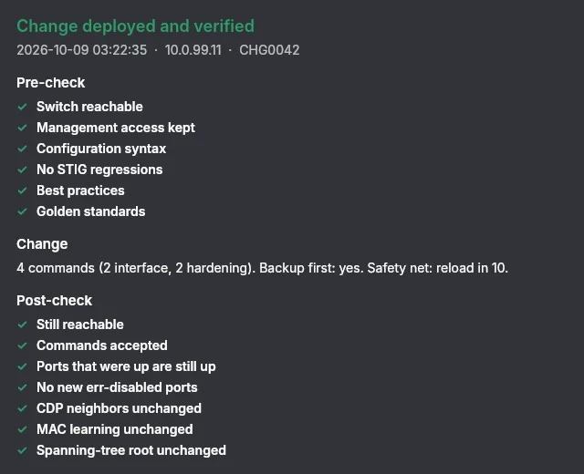
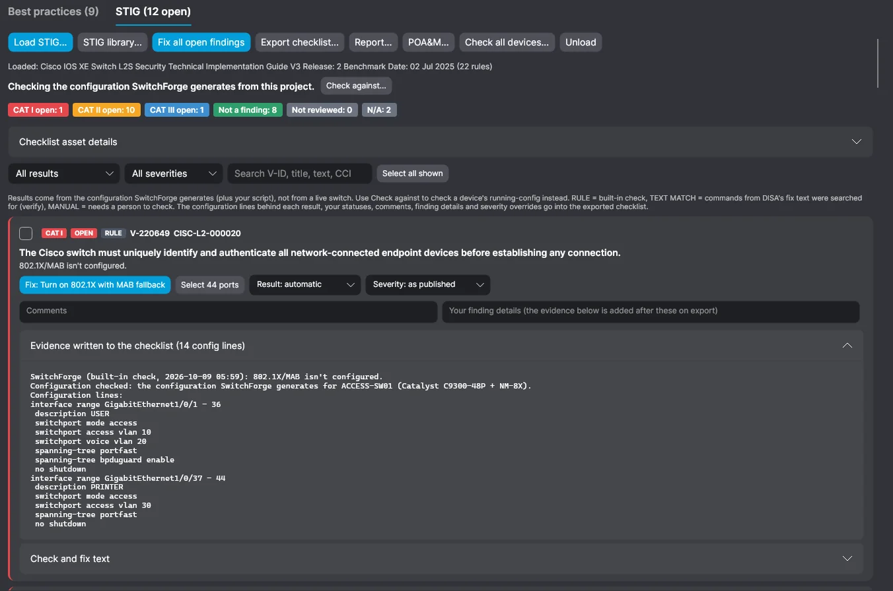
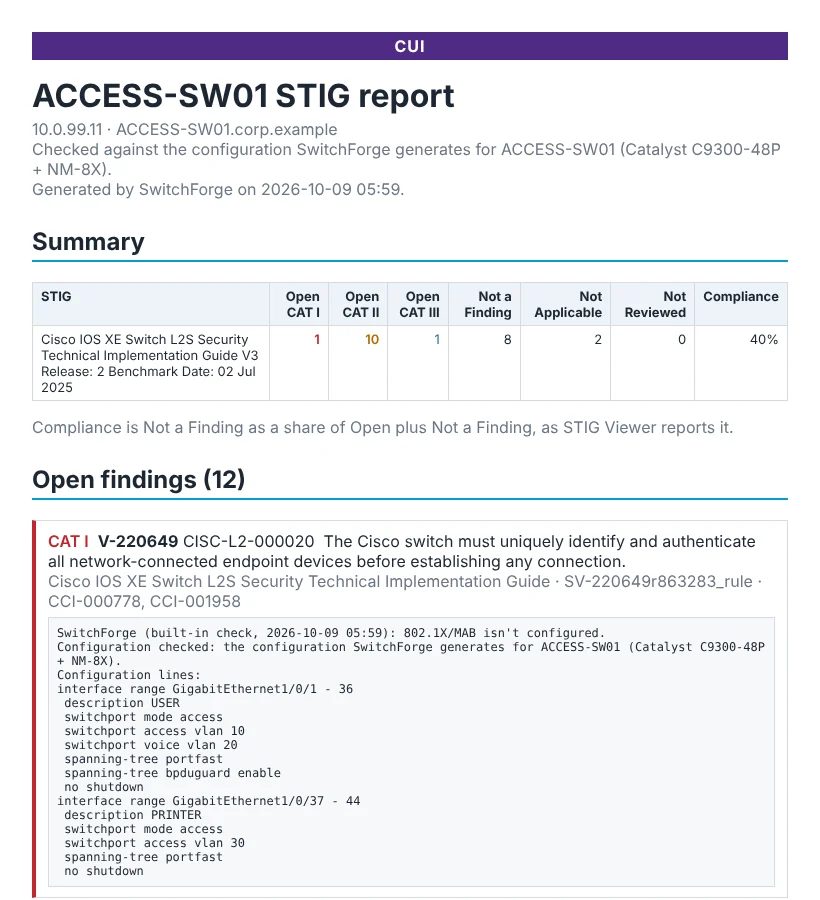
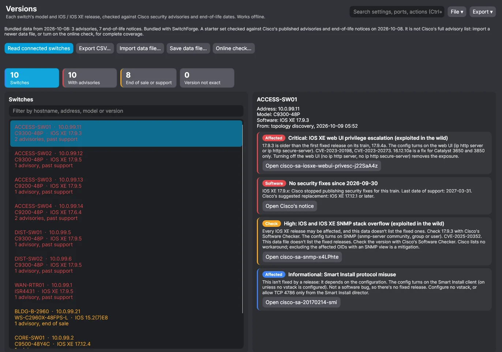
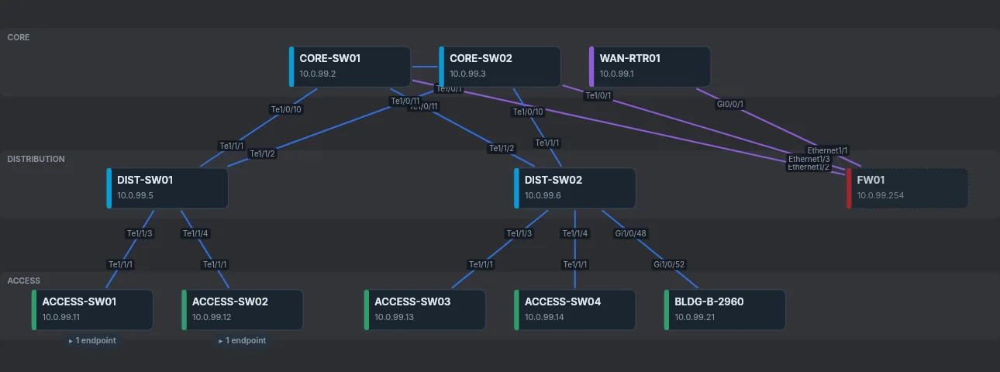

Catch the mistake before the switch does
Edit the config visually or as text. Both stay in sync, and everything is checked while you work, with no switch connected.
A debugger that knows IOS
Every line is checked as you type. Problem lines are underlined in the editor, and the debugger lists each issue with a Why? that explains it.
- Invalid values, like an NTP server of 10.20.30.999 or a route to a next hop that can't exist
- Typos with a one-click fix: "privilage" becomes "privilege"
- Overlapping subnets and duplicate addresses the switch would reject
- Open STIG findings listed alongside, as compliance items
 Click to enlarge
Click to enlargeACLs without the guesswork
Build named standard and extended ACLs one rule per row, with the generated CLI underneath.
- Reorder rules by dragging the handle or with the arrows
- Log per rule, or add a logged deny any in one click
- Apply it to the VTY lines (who may SSH in), SVIs or routed ports, in or out
- Extended rules with protocol, source, destination and ports
 Click to enlarge
Click to enlargeImport a running-config
It maps into settings and keeps anything else as custom CLI. The switch model is detected automatically.
Copy and paste ports
Right-click a port to copy its settings and paste them onto any selection.
Scripts with variables
A library of config snippets, show-command reports, and Tcl or Python for the switch.
Bulk staging
Stage many switches from a spreadsheet, or run commands on several at once.
Every change has a way back
Safe Commit sends only the lines that changed. Commits from the editor, a drift fix, Bulk or the MAC finder all take the same path.

Click to enlarge
Click to enlargeThe switch is reachable, nothing cuts off management access, no debugger errors, and no STIG or golden-standard regressions.
A ticket number, a backup first, then a reload-in-10 safety net (or an NX-OS checkpoint) while the delta is applied.
Still reachable, every command accepted, and before/after compared: ports, err-disabled, CDP neighbors, MAC learning and the spanning-tree root.
STIG compliance you can fix, and prove
Load the DISA STIG and every rule is checked against the config, with the lines that prove the result. Built for STIG and RMF workflows.
DISA STIGs, rule by rule
Load the DISA zip, an XCCDF file or a STIG Viewer checklist. Shown here: the Cisco IOS XE Switch L2S STIG, V3R2.
- Evidence written to the checklist: the config lines behind every result, secrets masked
- One-click fixes for a rule, or Fix all open findings at once, with Undo
- Your review: status, comments, finding details and severity overrides
- Export a
.cklbfor STIG Viewer 3 and eMASS, or a.ckl

Click to enlargeReports an assessor can read
One click turns the review into a report to read or print. It also saves as Excel or CSV.
- The classification banner from the checklist's marking
- A summary per STIG: open findings by category and the compliance score STIG Viewer would show
- Every open finding with its rule, CCIs and the config lines behind it

Click to enlargeNIST 800-53 mapping
Import DISA's CCI list and every rule shows its 800-53 controls, in the app and in reports.
POA&M draft
One item per open finding, in the eMASS spreadsheet layout.
Fleet-wide runs
Check every switch's newest backup at once, then save a report or checklist per switch.
Policy packs
Your own golden standards with required and forbidden lines, scoped by device role.
The whole fleet, without logging in to each switch
State, history and drift, worked out from scheduled backups.
Fleet board
Every switch at a glance, checked from its newest backup without connecting.
- Compliant, drifted, non-compliant or unreachable, counted at the top
- The reason on every row: a failed backup, the policy-pack lines it misses, or what drifted
- Refresh checks the connected switches live
What changed?
The changes since a switch's last known-good backup, in plain language, with security-related changes first.
- Known-good backups marked with a star, saved after a Safe Commit that passed or marked by hand
- Security changes first, like an SNMPv3 group removed and a community added
- Grouped into interfaces, VLANs and management settings, then the line-by-line diff
 Click to enlarge
Click to enlargeIOS version inventory
Each switch's model and IOS or IOS XE release, checked against Cisco security advisories and end-of-life dates.
- Advisories that apply, including whether the config turns on the affected feature
- End of sale and support flagged per switch
- Works offline from bundled data, with an optional online check using your own Cisco API key

Click to enlargeTopology from CDP and LLDP
Discover the network from your connected switches and get it drawn in layers. Double-click a device for SSH, its config or its port map.
- Core, distribution and access layers, laid out automatically
- Links colored by trunk or routed, with the port on each end
- Phones, access points and hosts tucked under their switch

Click to enlargeScheduled backups
Hourly to weekly, with an alert on drift that turns red when security settings change.
Search every backup
Find which switches have, or are missing, any config line.
Find a MAC or IP
Trace a device to the switch port it's plugged into, then configure that port.
Topology overlays
Color the map by STIG results or drift, and compare two discovery snapshots.
Runs on one Windows PC. No cloud, no account.
Projects, backups and settings stay in your Windows profile. Nothing is sent anywhere.
FIPS mode
SSH uses approved algorithms only, host keys are confirmed before they're trusted, Telnet is off, and TFTP needs your OK each time and is logged.
Air-gap ready
Licenses are checked on the PC, so the app works on networks with no internet at all. No telemetry.
SBOM and checksums
Every release ships a CycloneDX software bill of materials and SHA-256 checksums for your security review.
Admin and read-only profiles
Auditors and IT viewers get a read-only profile that can look at everything but can't change configs or switches.
Audit trail
A changelog of every edit, commit and export, and a saved record of each deployment with secrets removed.
Secrets stay secret
Local accounts and the enable secret are stored as type 9 or type 8 hashes, and secrets are masked in evidence and records.
Catalyst, Nexus and ISR
Catalyst IOS XE
- 9300
- 9200 / 9200L
- 9500
Classic IOS
- 2960-X
Nexus NX-OS
- 93180YC-FX
- 9348GC-FX3PH
Routers
- ISR 4331, 4431, 1111-8P
- Catalyst 8200
- Cisco 2911
Connects over SSH, a console cable, SCP or the built-in TFTP server.
Get the latest test build
Windows 10 or 11, 64-bit. Nothing else to install.
Get-FileHash in PowerShell and compare it with SHA256SUMS.txt..sflic file from your invitation on the first screen. Without one the app opens read-only.Questions testers ask
Do I need a switch to try it?
No. Design, the debugger, ACLs, the STIG checks and reports all work offline, on the built-in sample switch or a config file you import. Connect to a switch when you want to read its config or deploy.
Which STIGs does it check?
The Cisco IOS XE switch STIGs (L2S and NDM), the router STIG, and NX-OS. Load the STIG from DISA's download, an XCCDF file or a STIG Viewer checklist. Rules it can't check automatically are left for you to review, and a checklist you load brings its existing statuses and comments with it.
Does it need internet access?
No. The license is checked on the PC, and the IOS end-of-life data is bundled. The only outside connection is the optional Cisco advisory lookup on the Versions page, which you turn on with your own Cisco API key.
Where is my data kept?
In your Windows profile, under %AppData%\SwitchForge: projects, backups, settings and the changelog. Remembered session passwords are protected with Windows DPAPI. Nothing is uploaded.
What does read-only mean?
Without a valid license, or on a read-only profile, you can open projects and look around, but you can't change configs or push to switches. When a tester license runs out, your projects and backups stay where they are.
How do I report a problem?
Through the contact you received your invitation from. Include the version number (shown on the sign-in screen) and what you were doing.